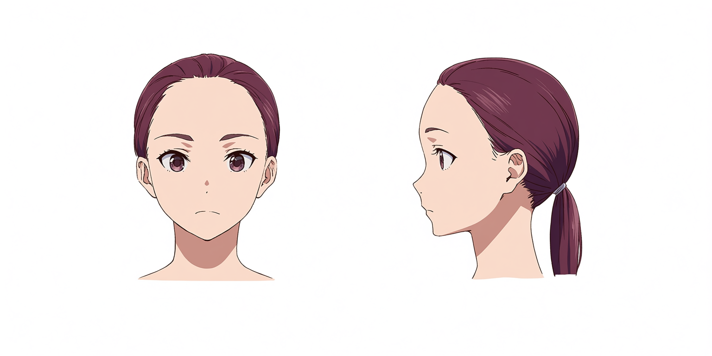
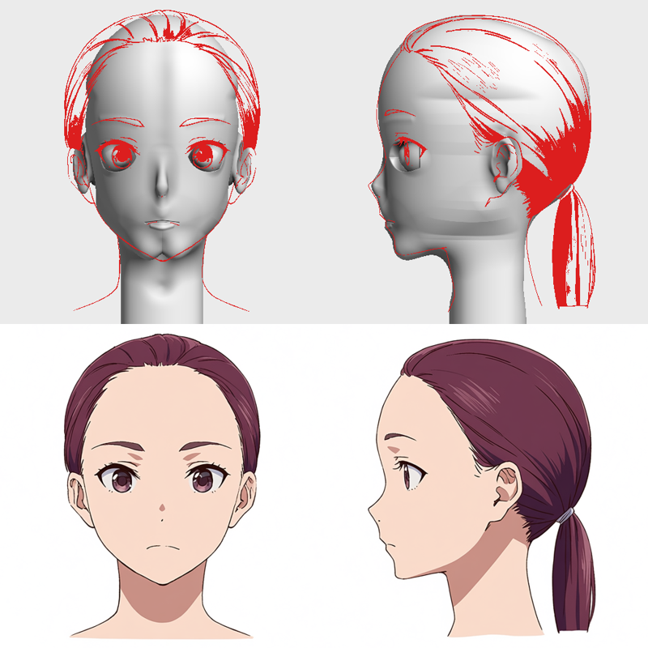

anime head v08 (from the Anima reference) - drag to rotate

the reference (Anima, seed 1)

model with reference lines in red (top) vs reference (bottom)exp03 face v07 (latest) — drag to rotate, scroll to zoomexp02 human body v04exp03 face v04 (before the fixes)